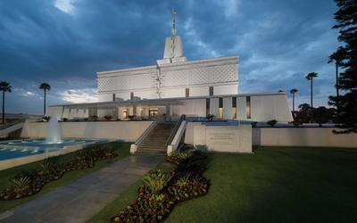
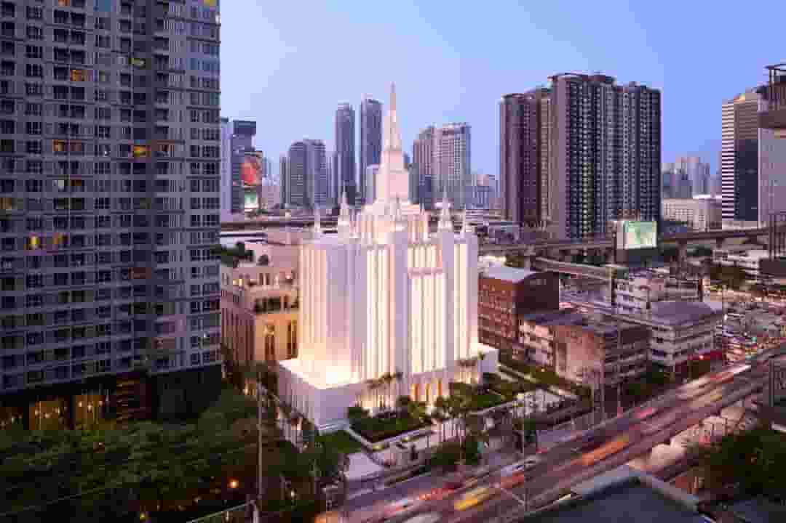

Washington D.C. Location: Kensington, Maryland, United States Dedicated: 1974, November, 19 Size: 156,558 sq ft
Mexico City Mexico Location: Mexico City, Mexico Dedicated: 1983, December, 2 Size: 116,642 sq ft 
Bangkok Thailand Location: Bangkok, Thailand Dedicated: 2023, October, 22 Size: 48,525 sq ft 